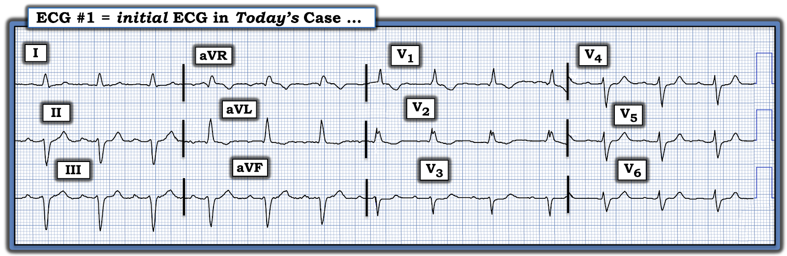
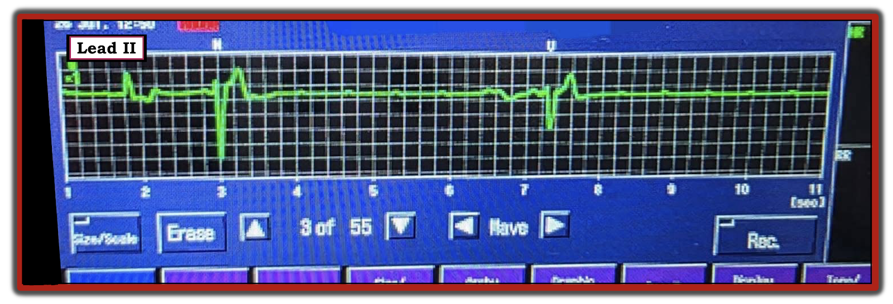
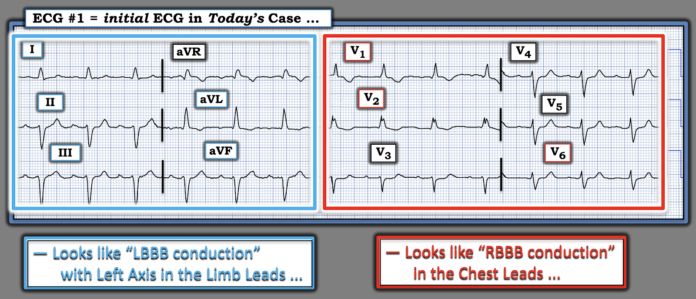
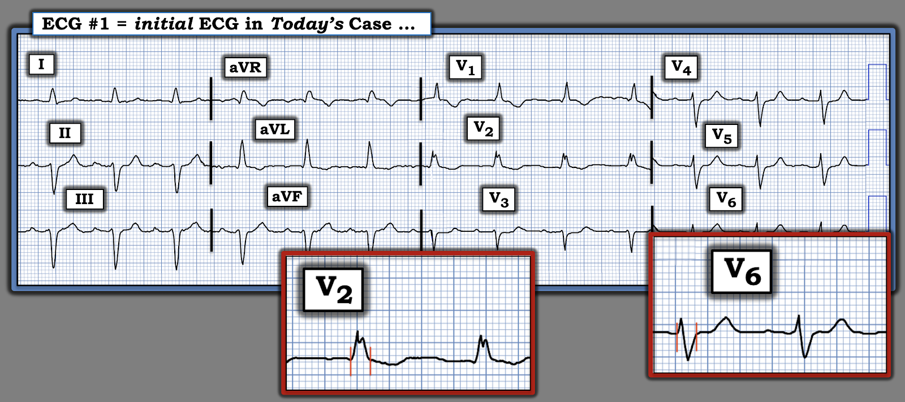

ECG Blog #517 — Ngất tái diễn ...
Điện tâm đồ trong Hình 1 được ghi ở một phụ nữ lớn tuổi đến khoa cấp cứu – ED (Emergency Department) sau khi đột ngột thức giấc trong tình trạng khó thở, chóng mặt và tin chắc rằng mình "sắp chết".
CÂU HỎI:
- BẠN sẽ diễn giải thế nào điện tâm đồ ban đầu của bà trong Hình 1?
- Theo bạn, đâu là nguyên nhân gây ra các triệu chứng của bà?


DIỄN TIẾN CỦA CA BỆNH:
Trong vài tuần sau đó — bệnh nhân này lại đến khoa cấp cứu thêm 2 lần.
- Ở lần 2 đến ED — Bà đến khám sau một cơn ngất kèm té ngã. Bà kể đã có vài đợt "chóng mặt" trong những ngày trước lần 2 đến ED này.
- Khám tại khoa cấp cứu "bình thường".
- Điện tâm đồ 12 chuyển đạo ghi lại gần như y hệt điện tâm đồ trong Hình 1.
- Xét nghiệm cơ bản không có gì đáng chú ý.
- Bệnh nhân được cho về nhà.
==============================
- Ở lần 3 đến ED — Bà đến khoa cấp cứu vì một cơn tiền ngất và chóng mặt kéo dài.
- Khám ban đầu không có gì đáng chú ý.
- Điện tâm đồ 12 chuyển đạo ghi lại một lần nữa không thay đổi so với điện tâm đồ trong Hình 1.
- Xét nghiệm cơ bản một lần nữa không có gì đáng chú ý.
- Bệnh nhân được gắn monitor theo dõi một thời gian tại khoa cấp cứu. Đột nhiên — bệnh nhân mất đáp ứng! Dải nhịp trong Hình 2 đã được ghi lại.
CÂU HỎI:
Biết rằng Hình 2 chỉ là một dải nhịp ngắn, ghi ở một chuyển đạo duy nhất ...
- Bạn diễn giải nhịp trong Hình 2 như thế nào?
- Bệnh sử trong ca hôm nay gợi ý chẩn đoán gì — khi xét cả 2 bản ghi trong Hình 1 và 2?


TRẢ LỜI:
Nhịp trong Hình 2 cho thấy nhịp chậm rõ rệt (21 ô lớn = 4.2 giây ngăn cách 2 nhát bóp ở giữa dải nhịp). Bản ghi kết thúc bằng gần 4 giây vô tâm thu (Chúng ta không biết liệu sau đó có thêm phức bộ QRS nào xuất hiện hay không).
- Dường như có các sóng P biên độ rất thấp nhưng gần như đều xuất hiện suốt bản ghi
==============================
BÌNH LUẬN:
Chuỗi sự việc này lẽ ra không nên xảy ra. Trong Hình 3 — tôi đã đánh dấu bản ghi ban đầu để minh họa chẩn đoán điện tâm đồ lẽ ra đã có thể được đưa ra ngay ở lần 1 bệnh nhân đến ED.
- Nhịp xoang, tần số ~80-85 lần/phút.
- Khoảng PR ở giới hạn trên của bình thường ( = 0.21 giây).
- QRS rộng (thời gian 3 ô nhỏ = 0.12 giây).
- Hình dạng QRS ở các chuyển đạo ngực phù hợp với dẫn truyền kiểu RBBB (tức là sóng R chiếm ưu thế ở chuyển đạo bên phải V1 — kèm sóng S tận rộng ở chuyển đạo V6).
- Hình dạng QRS ở các chuyển đạo chi phù hợp với dẫn truyền kiểu LBBB (tức là QRS dương hoàn toàn ở các chuyển đạo bên trái I và aVL). Ngoài ra — có LAD rõ rệt (trục lệch trái — Left Axis Deviation).
ĐIỀU CỐT LÕI:
Điện tâm đồ trong Hình 3 phù hợp với MBBB (blốc nhánh ngụy trang — Masquerading Bundle Branch Block).


ĐIỂM THEN CHỐT (PEARL) #1: Tiêu chuẩn điện tâm đồ để chẩn đoán MBBB đã được Dhanse và cs. mô tả (J Clin Diag Research: 10(9), 2016) — cùng với Buttner và Cadogan (LITFL, 2021) — và bao gồm các điểm sau:
- Hình ảnh điện tâm đồ phù hợp với RBBB ở các chuyển đạo ngực (tức là QRS giãn rộng, chủ yếu dương ở chuyển đạo V1).
- Hình ảnh điện tâm đồ phù hợp với LBBB ở các chuyển đạo chi (tức là QRS giãn rộng, đơn pha ở chuyển đạo I và aVL).
- LƯU Ý: Các biến thể của "chủ đề" MBBB nêu trên là thường gặp. Do đó, sóng S thường đi kèm hình ảnh RBBB ở các chuyển đạo ngực bên V5,V6 có thể có hoặc không. Ở các chuyển đạo chi, thay vì hình ảnh LBBB điển hình — thường sẽ thấy hình ảnh LAHB cực độ (blốc phân nhánh trái trước — Left Anterior HemiBlock) (tức là với các phức bộ QRS rộng và chủ yếu [nếu không phải hoàn toàn] âm ở các chuyển đạo dưới — và sóng s tận nhỏ hơn [cùn] ở chuyển đạo I và aVL).
- ĐIỀU CỐT LÕI: Biết bệnh sử lâm sàng có thể giúp nhận ra các hình ảnh IVCD phù hợp với MBBB (tức là khi bệnh nhân có tiền sử bệnh tim nền nặng đã biết). Việc phân biệt với blốc hai phân nhánh (tức là với RBBB/LAHB) đơn thuần — có thể dễ dàng hơn khi thấy một hoặc nhiều dấu hiệu sau: i) QRS dương ở chuyển đạo V1 có hình dạng đơn nhất (monomorphic) hơn (thiếu dạng rsR' ba pha rõ nét với "tai thỏ" bên phải cao hơn như trong RBBB điển hình); ii) Không có sóng S tận rộng ở chuyển đạo ngực bên V6; iii) Thấy QRS giãn rộng dương hoàn toàn (hoặc ít nhất chủ yếu dương) ở chuyển đạo I và/hoặc aVL, với tối đa chỉ một sóng s nhỏ, hẹp ở các chuyển đạo này; và/hoặc, iv) Thấy các phức bộ QRS giãn rộng, âm hoàn toàn (hoặc gần như âm hoàn toàn) ở các chuyển đạo dưới.
==============================
Nhìn Lại CA BỆNH Hôm Nay:
Nhìn lại thì mọi thứ đều rõ ràng 100% qua "kính hồi cứu" (retrospectoscope). Dù vậy — tôi nghĩ việc nhìn lại các sự việc trong ca hôm nay là rất bổ ích.
- Với bệnh sử như vậy — có thể người ta đã không chọn đặt máy tạo nhịp vĩnh viễn sau lần 1 bệnh nhân đến ED. Tuy nhiên, chẩn đoán MBBB lẽ ra phải được nhận ra từ điện tâm đồ ban đầu trong Hình 1 ở trên, vì nhịp là nhịp xoang — QRS rộng — và như đã thấy trong Hình 2, hình dạng QRS "trông" giống dẫn truyền kiểu RBBB ở các chuyển đạo ngực, nhưng lại là dẫn truyền kiểu LBBB kèm trục lệch trái ở các chuyển đạo chi.
- NẾU nhận ra MBBB ở lần 1 đến ED này — rồi xét đến cảm giác của bệnh nhân khi thức giấc "rằng mình sắp chết" — người thầy thuốc tinh ý lẽ ra đã có thể nghi ngờ rằng bệnh nhân có thể bị một dạng blốc AV gây loạn nhịp chậm, và do đó tiếp tục theo dõi bệnh nhân tại khoa cấp cứu (và tùy theo bệnh sử — có thể cho bệnh nhân nhập viện thêm 24 giờ để theo dõi nhịp tim).
- Và ngay cả khi không ghi nhận được gì trong 24 giờ theo dõi từ xa bổ sung đó, với chẩn đoán MBBB — lẽ ra bệnh nhân phải được dặn báo ngay bất kỳ "cơn chóng mặt" nào. Đặc biệt khi bà còn bị vài "cơn chóng mặt" trong vài tuần sau đó, nếu điều này được thực hiện — bệnh nhân đã có thể được chẩn đoán và đặt máy tạo nhịp từ rất lâu trước lần 3 đến ED.
- ĐIỂM THEN CHỐT #2: Như câu cách ngôn nổi tiếng của Sir William Osler, "Hãy lắng nghe bệnh nhân; Họ đang nói cho bạn biết chẩn đoán". Rất thường khi chẩn đoán đã nằm sẵn đó, được chính bệnh nhân nói cho chúng ta biết, chỉ cần chúng ta chịu lắng nghe (tức là Bệnh nhân hôm nay đã nói với chúng ta rằng bà bị đánh thức với cảm giác mình "sắp chết" — rồi sau đó còn có thêm các cơn "chóng mặt" trong những ngày trước lần 2 đến ED).
- ĐIỂM THEN CHỐT #3: Thực thể MBBB thường được y văn nhắc đến là "hiếm gặp". Dù vậy, từ khi tôi biết đến thực thể này — theo kinh nghiệm của tôi, nó không hiếm. Thay vào đó, tôi thấy tình huống này giống với những gì tôi đã trải qua với một số hình ảnh điện tâm đồ đặc hiệu, như điện tâm đồ Brugada-1, bệnh cơ tim Takotsubo — và PAC bị blốc. Mỗi thực thể này từng có vẻ "hiếm" với tôi — cho đến khi tôi biết đến chúng. Và giờ đây khi đã có kinh nghiệm nhận ra điện tâm đồ Brugada-1, bệnh cơ tim Takotsubo (Takotsubo CM) và PAC bị blốc — chúng không còn "hiếm" nữa, mà thường gặp hơn ta tưởng trong những bối cảnh lâm sàng phù hợp (Xem ECG Blog #394 và Blog #419 để xem thêm 2 ví dụ khác về MBBB).
==============================
QRS trong điện tâm đồ hôm nay có thực sự rộng không?
Đáng dành chút thời gian xem lại câu hỏi liệu phức bộ QRS trong điện tâm đồ ban đầu của ca hôm nay có thực sự rộng hay không? Suy cho cùng, QRS trông không rộng lắm — Phải không?
- Nhiều sách giáo khoa định nghĩa QRS giãn rộng là khi thời gian QRS ≥0.12 giây. Nhưng liệu đây có thực sự là ngưỡng tốt nhất để định nghĩa QRS giãn rộng, khi có những ca VT phân nhánh (fascicular VT) với thời gian QRS dưới 0.12 giây? (Kapa và cs. — Circ: Arrhythm and Electrophys 10(1), 2017).
- Định nghĩa QRS giãn rộng ở trẻ em thì khác. Lý do rất đơn giản: Khử cực một quả tim nhỏ hơn cần ít thời gian hơn. Vì vậy, thời gian QRS ở trẻ em đến ~12 tuổi bình thường phải ≤0.10 giây (Rijnbeek và cs. — Eur Heart J 22:702-711, 2001 — Xem Bảng 2 trong tài liệu này).
- ĐIỂM THEN CHỐT #4: Về mặt thực hành — tôi thấy cách dễ nhất để xác định QRS là "rộng" ở người lớn là — NẾU phức bộ QRS ở bất kỳ chuyển đạo nào kéo dài rõ ràng hơn nửa ô lớn (tức là Vì mỗi ô lớn trên giấy điện tâm đồ = 0.20 giây — hơn nửa ô lớn = ≥0.11 giây).
Quay lại điện tâm đồ ban đầu của ca hôm nay — dù QRS "trông" không quá rộng — thực tế nó đo được 3 ô nhỏ ở một số chuyển đạo (tức là thời gian QRS = 3 ô nhỏ = 0.04 X 3 = 0.12 giây ==> do đó QRS có rộng trong điện tâm đồ ban đầu hôm nay). Để thuận tiện cho việc đánh giá — tôi đã thêm các ô phóng to QRS ở chuyển đạo V2 và V6 trong Hình 4.
- ĐIỂM THEN CHỐT #5: Không chỉ đơn thuần xác định thời gian QRS có ≥0.11 giây hay không — lý do chúng ta tập trung vào việc QRS có "rộng" hay không là vì chúng ta đang cố loại trừ khả năng đây là một nhịp thất.
- Lưu ý rằng một hoặc vài chuyển đạo có thể trông hẹp một cách đánh lừa nếu phần đầu hoặc phần cuối của QRS nằm trên đường đẳng điện ở chuyển đạo đang xem (đó là lý do vì sao "12 chuyển đạo thì Tốt hơn Một" ).
- Chính vì lý do này mà: i) Tôi luôn xem xét thật kỹ khi đo thời gian QRS nếu nhiều phức bộ QRS có vẻ rộng-hơn-mức-đáng-có; — ii) Chúng ta cần xem kỹ cả 12 chuyển đạo tại điểm khởi đầu và kết thúc của QRS khi đo (tôi thấy dễ làm nhất bằng cách chọn những phức bộ QRS bắt đầu hoặc kết thúc trên một đường kẻ của giấy điện tâm đồ); — và, iii) Chúng ta nên chọn làm số đo thời gian QRS phức bộ dài nhất mà ta có thể xác định chính xác điểm khởi đầu và kết thúc của nó.


= = = = =
LƯU Ý: QRS chẳng phải trông hẹp một cách đánh lừa ở chuyển đạo V3 sao? Điều này không ngăn tôi xác định thời gian QRS thực sự — vì tôi thấy mỗi chuyển đạo trong 11 chuyển đạo còn lại đều "trông" rộng. Việc thấy các sóng P dương đều đặn với khoảng PR cố định ở chuyển đạo II — sau đó đã khẳng định rằng nguyên nhân QRS giãn rộng trong ca hôm nay là một dạng rối loạn dẫn truyền nào đó (và không phải nhịp thất).
==============================
DIỄN TIẾN CỦA CA BỆNH:
- Bệnh nhân hôm nay có MBBB. Người phụ nữ này có triệu chứng rất nặng khi đến khoa cấp cứu với các cơn ngất tái diễn. Cuối cùng (tức là ở lần 3 đến ED) — bà đã trải qua một đợt nhịp chậm trầm trọng kéo dài, phù hợp với PAVB (blốc nhĩ thất kịch phát — Paroxysmal Atrio-Ventricular Block) — như được bàn trong PHẦN BỔ SUNG bên dưới.
- Bệnh nhân được chuyển đi đặt máy tạo nhịp vĩnh viễn.
==================================
Lời cảm ơn: Xin cảm ơn Ahmed Marai (từ Iraq) và Amr Elhelaly (từ Vương quốc Anh) — đã cho phép tôi sử dụng ca bệnh và các bản ghi này.
==================================
Các bài ECG Blog liên quan đến ca hôm nay:
- ECG Blog #205 — Ôn lại Cách tiếp cận hệ thống của tôi trong đọc điện tâm đồ 12 chuyển đạo.
- ECG Blog #282 — ôn lại cách tiếp cận dễ áp dụng trong chẩn đoán điện tâm đồ các blốc nhánh (RBBB, LBBB và IVCD).
- ECG Blog #203 — ôn lại chẩn đoán điện tâm đồ về trục, blốc phân nhánh và blốc hai phân nhánh.
- ECG Blog #394 và ECG Blog #419 — để xem thêm 2 ví dụ khác về MBBB.
=======================
PHẦN BỔ SUNG (Phần bổ sung này được trích lại từ ECG Blog #419):
=======================
Xem kỹ Hình 2 — tôi nghi ngờ dải nhịp rút gọn này biểu hiện một dạng PD-PAVB (blốc nhĩ thất kịch phát phụ thuộc khoảng ngưng — Pause-Dependent Paroxysmal AtrioVentricular Block).
- Bệnh sử của bệnh nhân với nhiều cơn có lẽ ngắn và tự hồi phục — phù hợp với PD-PAVB.
ĐIỂM THEN CHỐT #6: Như được mô tả bởi Bansal và cs. (J Arrhythmia 35:870-872, 2019) — Bosah và cs. (Cureus 14[7]: e27092, 2022) — và Uhm và cs. (Heart Rhythm Case Rep 4(5):197-199, 2018) — thực thể được gọi là PAVB là một nguyên nhân gây ngất dễ bị bỏ sót và có khả năng gây tử vong (có lẽ thường xuyên hơn so với nhận thức chung).
- PAVB đặc trưng bởi sự khởi phát đột ngột, bất ngờ của blốc AV hoàn toàn với nhịp thoát thất đến muộn — do đó dẫn tới một khoảng thời gian kéo dài không có bất kỳ QRS nào trên điện tâm đồ. Trước khoảng ngưng kéo dài — bệnh nhân có dẫn truyền AV 1:1 mà không có bằng chứng nào khác của blốc AV (đó là lý do vì sao sự khởi phát PAVB thường hoàn toàn không được nghi ngờ! ).
- Do khởi phát hoàn toàn bất ngờ và có xu hướng gây đột tử — PAVB khó ghi nhận được và bị chẩn đoán thiếu đáng kể.
- Ba cơ chế gây PAVB đã được mô tả: i) Qua trung gian phế vị (tức là blốc do cường phế vị (Vagotonic Block) — như được mô tả trong ECG Blog #61, với các tài liệu tham khảo liệt kê ở cuối bài Blog đó nêu các trường hợp vô tâm thu thoáng qua do trương lực phế vị quá mức!); — ii) PAVB nội tại (Pha 4 = phụ thuộc khoảng ngưng hoặc phụ thuộc nhịp chậm); — và, iii) Vô căn.
i) Blốc AV do cường phế vị:
Dạng PAVB này có thể lành tính khi nó do một đợt tăng vọt mạnh, thoáng qua của trương lực phó giao cảm ở một người vốn khỏe mạnh (như có thể xảy ra khi nôn dữ dội; một cơn ho dữ dội; phản ứng phế vị khi lấy máu).
- Vấn đề của PAVB do cường phế vị khu trú bên trong nút AV.
- Thường có "tiền triệu" vã mồ hôi, buồn nôn, chóng mặt — bệnh nhân nhận biết mình sắp ngất.
- Dấu hiệu điện tâm đồ đặc trưng của PAVB do cường phế vị gồm tần số xoang chậm dần — thường kèm khoảng PR dài dần và ổ thoát QRS hẹp — sau đó hồi phục với tần số xoang và khoảng PR dần trở lại bình thường.
ii) PAVB nội tại:
Cơ chế PAVB này được gọi bằng nhiều tên — thường gặp nhất là "blốc AV pha 4" và/hoặc PD-PAVB (blốc nhĩ thất kịch phát phụ thuộc khoảng ngưng — Pause-Dependent Paroxysmal AtrioVentricular Block).
- PD-PAVB là cơ chế khả dĩ nhất cho nhịp tim trong Hình 2 của ca hôm nay. Bệnh lý nền là bệnh hệ His-Purkinje nặng (được gợi ý mạnh bởi sự hiện diện của MBBB trong Hình 3 của ca hôm nay). Dạng PD-PAVB này nhiều khả năng gây tử vong trừ khi bệnh nhân được đặt máy tạo nhịp vĩnh viễn.
- Sinh lý bệnh thú vị của PD-PAVB là do sự xuất hiện ngẫu nhiên của một PAC hoặc PVC "đúng thời điểm" làm khử cực một phần HPS (hệ His-Purkinje — His-Purkinje System) bị bệnh tại một thời điểm đặc biệt trong chu kỳ, khiến HPS vốn hoạt động kém không thể hoàn tất khử cực. Khoảng ngưng kéo dài trong khử cực thất sau đó có thể chỉ chấm dứt nếu có một PAC hoặc PVC "đúng thời điểm" khác xuất hiện vào đúng thời điểm cần thiết để "cài đặt lại" chu kỳ khử cực của HPS (điều này có lẽ giải thích vì sao bệnh nhân trong ca hôm nay tự hồi phục).
- Đáng chú ý — mặc dù bệnh HPS nền nặng đã rõ qua loạn nhịp chậm trong Hình 2 của ca hôm nay — có tới 1/3 số bệnh nhân bị PD-PAVB không có bằng chứng rối loạn dẫn truyền trên điện tâm đồ, khiến việc xác lập chẩn đoán này càng khó khăn hơn.
iii) PAVB vô căn:
Đây là dạng PAVB được mô tả gần đây nhất — trong đó các dấu hiệu không phù hợp với cả 2 dạng còn lại.
- Điện tâm đồ nền trước cơn PAVB vô căn thường bình thường.
- Không thấy "yếu tố khởi phát" nào của PAVB (tức là không có nguồn gây tăng trương lực phế vị quá mức — và không thấy PAC/PVC khởi phát nào).